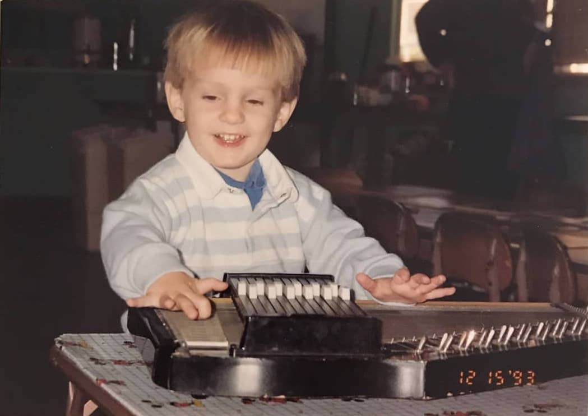

I'm a product designer who turns musical abstractions into instruments you can play.
In my head there's a mythological Pythagoras scratching the circle of fifths into the dirt with a stick. What he couldn't have imagined is that one day the diagram itself could become the instrument. That's my work. I take musical abstractions — harmonic languages, voice-leading systems, transition networks — and turn them into things you can play. I first presented this idea at NIME 2019 in a peer-reviewed paper, and I've been building on it ever since.
Scale Navigator made harmony something you change once so every instrument follows. Ensemble Jammer let non-musicians improvise together with no wrong notes. SNaPS let samples survive harmonic changes instead of restarting. Early Downhome Blues turned a 1920s musical idiom into something you could generate and play with. I design the interaction model, prototype, build, ship to the App Store, and refine after real people use it.
Before this I was a product manager on creative software at SPG Studios and FutureCare. I hold an MFA in Music Technology from CalArts and a BFA in Vocal Performance from UC Santa Cruz.
Most music software helps people express ideas they already have. I'm more interested in helping people have ideas they couldn't have had otherwise.